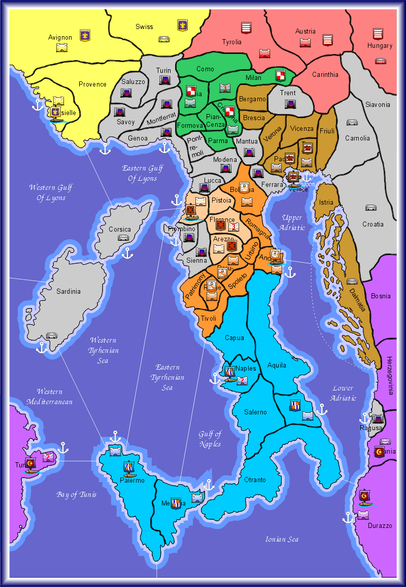

Machiavelli is designed to be played by a group of 4 to 8 players. However, the official scenarios are best played with 6 or 8 players. Each one of the players controls one of the available powers. The game board is a map of the Italian Peninsula and its nearby countries, including the southeast of France, Switzerland, Austria, Hungary, the coasts of the Adriatic Sea, Tunis, and the mediterranean islands Corsica and Sardinia. The board is divided in 73 different areas. There are two types of areas: provinces and seas. Some of the provinces have a city, that in some cases can be fortified. Some of these fortified cities have a port. Each player has a set of tokens that represent three types of military units: armies, fleets and garrisons. All of a player's tokens have the same colour. Also, the game includes other tokens, such as assassination tokens, rebellion tokens, famine tokens and ducats, the coinage in Machiavelli.
